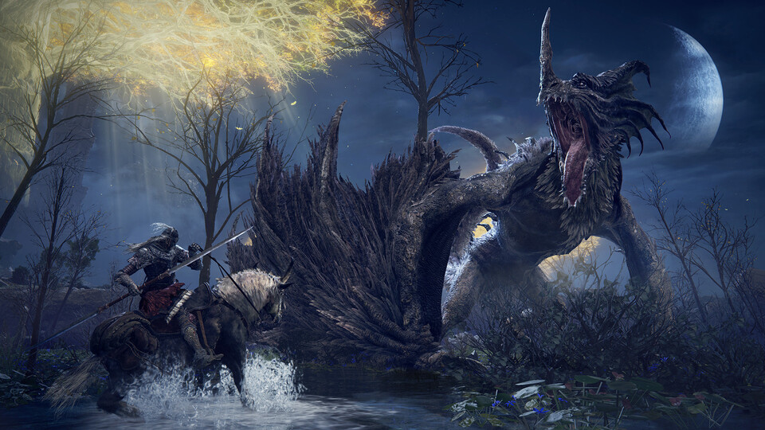

- Elden Ring
- $10.000
La historia de Elden Ring es la del Sinluz, un exiliado que regresa a un marchito y enorme reino conocido como las Tierras Intermedias. Su propósito: reclamar el poder del Círculo de Elden. Una gesta que lo enfrentará a criaturas de pesadilla y un cruel destino.


EL NUEVO JUEGO DE ROL Y ACCIÓN DE AMBIENTACIÓN FANTÁSTICA.
Álzate, Sinluz, y que la gracia te guíe para abrazar el poder del Círculo de Elden y encumbrarte como señor del Círculo en las Tierras Intermedias.- • Un extenso mundo lleno de emociones Un vasto mundo perfectamente conectado en el que los territorios abiertos estarán repletos de situaciones y mazmorras enormes con diseños complejos y tridimensionales. Mientras exploras, experimentarás el deleite de descubrir amenazas desconocidas y sobrecogedoras, y eso te haré sentir la emoción de la superación.
- • Crea tu propio personaje Además de personalizar la apariencia de tu personaje, puedes combinar libremente las armas, armaduras y la magia que te equipas. Puedes desarrollar a tu personaje según tu estilo de juego, tanto para aumentar tu fuerza bruta y ser un guerrero poderoso, como para dominar la magia.
- • Un drama épico nacido de un mito Una historia muy profunda contada en fragmentos. Un drama épico en el que las motivaciones de cada personaje se encuentran en las Tierras Intermedias.
- • Jugabilidad online única que te conecta libremente con otros jugadores Además del multijugador, en el que te puedes conectar directamente con otros jugadores y viajar juntos, el juego incluye un elemento online asíncrono único que te permite sentir la presencia de otros.
ACERCA DE ESTE JUEGO
Minimo
-
SO:
Windows 10
-
Procesador:
INTEL CORE I5-8400 or AMD RYZEN 3 3300X
-
Memoria:
12 GB de RAM
-
Graficos:
NVIDIA GEFORCE GTX 1060 3 GB or AMD RADEON RX 580 4 GB
-
DirectX:
Versión 12
-
Almacenamiento
60 GB de espacio disponible
Maximo
-
SO:
Windows 10/11
-
Procesador:
INTEL CORE I7-8700K or AMD RYZEN 5 3600X
-
Memoria:
16 GB de RAM
-
Graficos:
NVIDIA GEFORCE GTX 1070 8 GB or AMD RADEON RX VEGA 56 8 GB
-
DirectX:
Versión 12
-
Almacenamiento
60 GB de espacio disponible